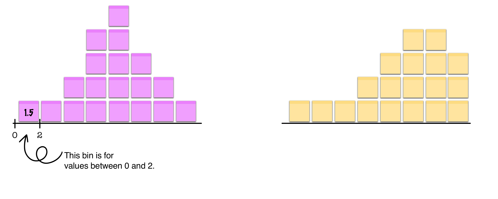

import numpy as np
# Same sample dataset
sample_data = [1, 2, 6, 5, 1]
# Calculate mean the easy way!
mean_sample = np.mean(sample_data)
print("mean of sample data:", mean_sample)mean of sample data: 3.0As you might have guessed, Python can do much more than just the functions len(), min(), and max(). In fact, it can help us calculate our measures of center!
You have already calculated the mean and median by hand on your lab sheet. Now, let’s ask Python to do it!
Python has built-in tools to calculate the mean. We’ll use something called NumPy (Numerical Python). NumPy is one example of a library or package that you can add to Python. When you add a library to Python, you are increasing the functions availble to you. For example, we have many more options with NumPy than just len(), min(), and max().
We have to “import” these libraries in Python and then often give them a nickname. For example, we import NumPy as np instead of typing “numpy” all the time.
import numpy as np
# Same sample dataset
sample_data = [1, 2, 6, 5, 1]
# Calculate mean the easy way!
mean_sample = np.mean(sample_data)
print("mean of sample data:", mean_sample)mean of sample data: 3.0Breaking it down:
- import numpy as np = Load the NumPy library/package (we only do this once)
- np.mean() = NumPy’s function to calculate mean
The website doesn’t save your nitrate readings list from the previous page, so you’ll need to re-enter your data into the list below (Line 4) again.
One of the benefits of using Python is that is can handle much larger amount amounts of data with ease. For example, let’s consider the nitrate and nitrite data your whole class collected. We’ll do that by importing the data collected in the Google Form. That form sends the data to a spreadsheet, or CSV (comman separated values) file.
Only edit the CSV URL in the code below. The rest is written for you. This will pull the class nitrate and nitrite data from the CSV file so you can use it later down the page.
Using the code written to calculate the mean for your group’s nitrate data, modify it to calculate the class nitrate and nitrite means.
Similarly, calculate the median for the class nitrate and nitrite data.
A key practice in statistics is to visualize the data! One of the main types of plots we can use to do this is a histogram. A histogram uses bins to group the data and then plots the number of observations in each bin.
Grab those sticky notes from the lab!
On the wall, you will find two areas prepared for your stickies. One has an axis binned for nitrates (look for a max value of 50+) and the other has an axis binned for nitrites (look for a max value of 10+).
Place your stickies in the correct bin, putting your nitrate values on the nitrate graph and the nitrite values on the nitrite graph.

Python can also make histograms! Run the code blocks below to see a histogram of the class nitrate value (block #1) and the class nitrite values (block #2). Do the histograms look similar to the plots we made by hand?
Add the mean and median to the nitrate histogram.
Add the mean and median to the nitrite histogram.
What do you notice about the relationship between the mean and median on the nitrate and nitrite histograms? Why do you think that might be?
| Function | What It Does | Example |
|---|---|---|
np.mean() |
Calculates average | np.mean([7.1, 7.2, 7.3]) = 7.2 |
np.median() |
Calculates median | np.median([7.1, 7.2, 7.3]) = 7.2 |
len() |
Counts items | len([1, 2, 3]) = 3 |
max() |
Finds maximum | max([1, 2, 3]) = 3 |
min() |
Finds minimum | min([1, 2, 3]) = 1 |